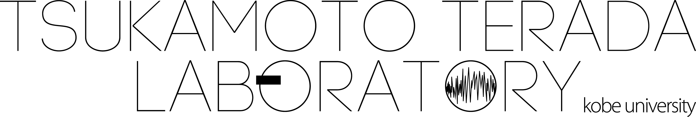

Ubiquitous
Wearable
Workshop 2023
2023年12月22日 (金) ～ 23日 (土)
@兵庫県立 淡路夢舞台国際会議場 B1F イベントホール
〒656-2306 兵庫県淡路市夢舞台1番地
Welcome to UWW2023!
ユビキタス・ウェアラブル技術の発展はめざましく、これらの技術に関する研究開発が活発に行われています。神戸大学塚本・寺田研究室およびNPO法人ウェアラブルコンピュータ研究開発機構では、ユビキタス・ウェアラブルワークショップを2007年以来、毎年開催しており今年は17回目となります。2022年に引き続き、2023年は現地開催を予定しております。下記の通りの企画をしておりますので、是非ご参加いただけますようお願いいたします。
本ワークショップの特色は以下の通りです。
- A4原稿1枚記述 (原稿テンプレートは本ページからダウンロードをお願いします。)
- 一人15分程度のショートプレゼンテーション
- 参加者間の交流を目指した1泊2日の合宿型ワークショップ
- 実践的な情報処理技術に関する特別な企画などを含んだ「ナイトセッション」
※新型コロナウイルス (SARS-CoV-2) の状況によって、完全オンラインでの開催となる可能性もあります。
Registration Fees
参加費: TBD
Important Dates
参加申込締切: 2023年11月6日 (月) 23:59 (JST)
原稿提出締切: 2023年12月8日 (金) 23:59 (JST)
Download
原稿テンプレート：
Schedule
12/22 (金)
| 10:30-10:45 | オープニング |
| 10:45-17:00 | 口頭発表セッション (途中休憩あり) |
| 19:00-21:00 | ナイトセッション |
12/23 (土)
| 09:00 | 受付開始 |
| 10:00-17:00 | 口頭発表セッション (途中休憩あり) |
| 17:00-17:15 | 表彰・クロージング |
上記は暫定のタイムテーブルであり、参加者数等により変更が生じる場合がございます。
Organizers
| ワークショップ委員長 | 塚本昌彦 (神戸大) |
| ワークショップ副委員長 | 寺田 努 (神戸大) |
| 実行委員長 | 村尾和哉 (立命館大) |
| 実行副委員長 | 大西鮎美 (神戸大) |
| 会計 | 毛 昊珉 (神戸大) |
| 出版 | 吉田航輝 (立命館大) |
| テンプレート | 後藤佑介 (岡山大) |
| ウェブページ | 岡 大貴 (神戸大) |
| 投稿システム | 土田修平 (お茶の水女子大) |
| プログラム | 渡邉拓貴 (北海道大) |
| 投票・表彰 | 双見京介 (立命館大) |
| ナイトセッション | 鷲野 海 (神戸大) |
| 参加者管理 | 金 宏潤 (神戸大) |
| ローカル | 松井菜摘, Adhe Rahmatullah Sugiharto (神戸大) |
Sponsors
神戸大学大学院工学研究科 塚本・寺田研究室
NPO法人ウェアラブルコンピュータ研究開発機構
本ワークショップは、科学技術振興機構戦略的創造研究推進事業 (CREST) の成果報告会を兼ねています。